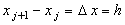
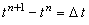
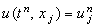

|
3.1. Понятие разностной сетки
Рассмотрим одномерное дифференциальное уравнение параболического типа:
Здесь u - функция двух независимых переменных:
для которых задан интервал их изменения:
Введём двумерную систему координат, отложив по оси абсцисс независимую переменную х,
а по оси ординат - независимую переменную t, и отметим на осях заданные интервалы
изменения переменных х и t. Разобьём интервал [a; b] на некоторое количество
равных частей и проведём из каждой точки деления прямую, перпендикулярную оси х.
Выполним те же действия для интервала изменения другой независимой переменной. Тогда
построенные прямые составят так называемую разностную сетку (см. рисунок).
Точки пересечения проведённых прямых будем называть узлами разностной сетки, причём каждый
из них будет соответствовать некоторым значениям независимых переменных х и t
из заданных интервалов.
Введём следующие обозначения:
| |
j - порядковый номер точки деления по оси х;
n - порядковый номер точки деления по оси t;
 - величина интервала между точками по оси х;
 - величина интервала между точками по оси t;
 - значение функции u, соответствующее точкам tn, xj .
|
Введём нумерацию точек разностной сетки по каждой из осей следующим образом:
| |
по оси х - j = 1, 2, 3, ..., N;
по оси t - n = 0, 1, 2, ..., M.
|
|
|